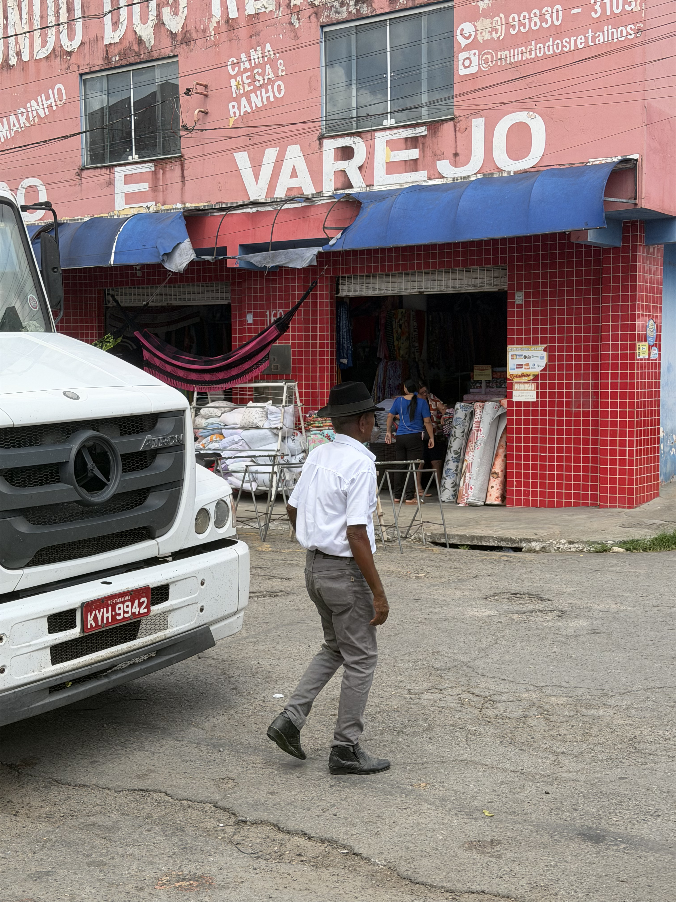

A Feira de Lagarto se espalha por diversos pontos da cidade. O tradicional Mercado da Feira acontece tanto dentro do prédio do Mercado Municipal quanto nas ruas adjacentes, que ficam tomadas por barracas e movimento.
Já a famosa Feira da Troca (o "Rolo"), embora localizada em uma área mais afastada do centro, reúne uma multidão fiel. É um espaço vibrante onde muitas pessoas se encontram para comprar, vender e trocar mercadorias na base da negociação direta.
1. A Feira do "Rolo" (Trocas)

Feira do "Rolo"
Foto: João Pedro Santana Silva Santos (2026)

Materiais de Construção
Foto: João Pedro Santana Silva Santos (2026)

Ferramentas Usadas
Foto: João Pedro Santana Silva Santos (2026)

Negociação de Bicicletas
Foto: João Pedro Santana Silva Santos (2026)

Negociação de Roupas
Foto: João Pedro Santana Silva Santos (2026)

Venda de Móveis
Foto: João Pedro Santana Silva Santos (2026)
2. A Feira Cotidiana

Venda de utensílios de cozinha
João Pedro Santana Silva Santos (2026)

Pessoas na Feira
João Pedro Santana Silva Santos (2026)

Venda de Produtos Diversos
João Pedro Santana Silva Santos (2026)

Transeúntes na Feira
João Pedro Santana Silva Santos (2026)

Venda de Tecidos
João Pedro Santana Silva Santos (2026)